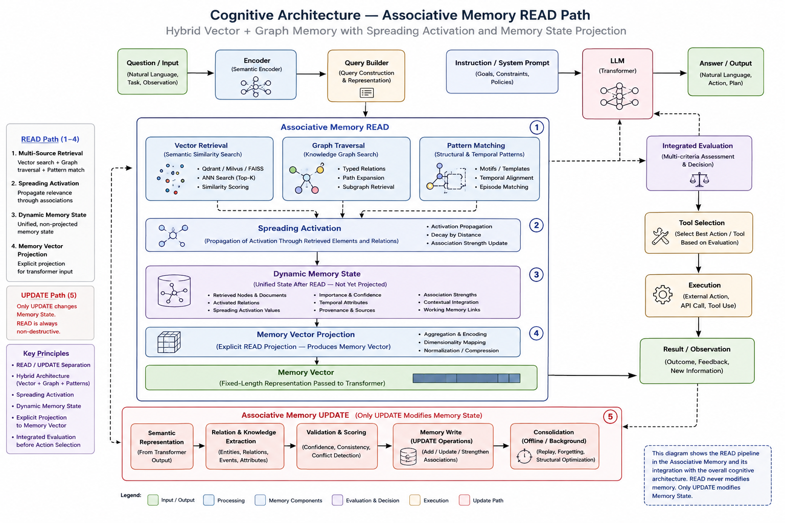

The required Associative Memory is not available as one ready-made component. However, several established families already provide important parts of the target behavior. The practical implementation strategy is therefore to combine existing mechanisms while explicitly engineering the missing state, interface, learning, and lifecycle properties.
Hopfield and Dense Associative Memory
Classical Hopfield networks, Dense Associative Memory, and modern continuous associative-memory formulations already provide content-addressable retrieval, pattern completion, and convergence toward attractor states. These mechanisms are useful candidates for the neural activation core.
They still require continual knowledge insertion, explicit separation of short-term activation from long-term structure, dynamic association creation and removal, controlled forgetting, scalable external storage, and the Cognitive interface contract in which only READ produces a Memory Vector.
Sparse Distributed Memory
Sparse Distributed Memory provides distributed storage, retrieval from incomplete cues, and graceful degradation under partial damage. These properties fit the requirement that knowledge should not reside in one fragile location.
It must be extended with learned semantic addressing, weighted spreading activation, evolving topology, importance and usage statistics, and canonical projection from active Memory State into a Memory Vector.
Vector Search and Approximate Nearest-Neighbour Systems
Vector databases and approximate nearest-neighbour systems are effective candidate-retrieval mechanisms. They find semantically similar past events even when wording differs, and they can expose historical execution cost, hidden risks, and prior outcomes that improve current estimates.
Vector similarity does not identify the type or direction of a relationship. Proximity alone cannot determine that one step creates an API required by another, that one event causes another, or that one action blocks a dependent operation. Vector search therefore remains a retrieval accelerator rather than a complete Associative Memory.
The accepted implementation rule is that vector retrieval may propose candidate memory elements during READ, but it must not define causality, dependency, or final relevance by itself. Candidate evidence must be integrated with explicit relations, dynamic activation, exact stored content, and the current Memory State before projection into a Memory Vector.
Graph and Knowledge Storage
Graph databases and knowledge graphs provide explicit nodes, typed and directed relations, traversal, dependency representation, and durable structural storage. They are appropriate for relations such as depends on, blocks, enables, precedes, contradicts, and is a candidate cause of.
A graph relation must not be treated as proof of causality merely because it is labelled causal. Causal assertions require provenance, confidence, supporting observations, intervention evidence where available, or an explicit status as a causal hypothesis.
Graph storage is also not sufficient as Associative Memory by itself. Cognitive additionally requires learned connection strengths, distributed latent knowledge, short-term activation, spreading activation, online association formation, integration of several retrieved elements, and explicit READ projection into the canonical Memory Vector.
Key–Value and Hash Storage
Key–value systems can retain enormous volumes of exact data economically. Associative mechanisms may identify relevant keys, while conventional storage retains documents, events, binary objects, exact values, and large structured records.
This division allows neural components to perform semantic association while classical storage performs reliable, inexpensive retention. It also preserves the project principle that neural networks and deterministic algorithms should be used where each is strongest.
Accepted Architectural Conclusions
- Vector search is retained as a semantic candidate-retrieval mechanism, not as the definition of Associative Memory.
- Typed graph relations are required for explicit dependency, blocking, enabling, temporal, and causal-hypothesis structure.
- Exact key-value or document storage remains separate from associative indexing and dynamic activation.
- READ integrates vector candidates, graph relations, exact content, and transient associative activation into Memory State before producing a Memory Vector.
- UPDATE remains the only operation permitted to modify persistent memory and learns only from Transformer-produced Semantic Representations.
Open Questions Requiring Experimental Resolution
Recommended Initial Hybrid
The most realistic initial implementation is a hybrid pipeline: a learned query encoder activates neural and graph associations; vector search proposes candidates; graph traversal and spreading activation construct dynamic Memory State; key–value storage supplies exact content; and an explicit READ operation projects the resulting state into the canonical Memory Vector.
Associative Memory READ and UPDATE Integration Path
The following scheme is the canonical explanatory view of the recommended initial implementation. It extends a conventional GraphRAG pipeline by placing vector retrieval, typed graph traversal, and pattern matching inside an explicit non-destructive READ operation. Their results do not go directly to the Transformer as retrieved text. They first participate in spreading activation, form a transient Dynamic Memory State, and are then projected into the canonical Memory Vector.

Interpretation of the Scheme
- The Encoder and Query Builder construct a semantic query; they do not write to memory.
- Vector Retrieval answers what is semantically similar, while Graph Traversal exposes typed dependency, temporal, enabling, blocking, contradiction, and causal-hypothesis relations.
- Pattern Matching contributes structural, temporal, and episodic analogues that may not be the nearest vector neighbours.
- Spreading Activation propagates relevance through retrieved elements and relations without changing persistent memory.
- Dynamic Memory State is the unified transient state created by READ; it may contain retrieved nodes, exact content, activated relations, confidence, provenance, temporal attributes, importance, and working-memory links.
- Memory Vector Projection is an explicit READ operation. It aggregates and maps Dynamic Memory State into the stable interface consumed by the Transformer.
- Integrated Evaluation and Tool Selection occur after memory reconstruction because action selection must use the reconstructed context rather than raw retrieval results.
- Execution results are converted by the Transformer into Semantic Representations and may enter the Semantic Feedback Learning Pipeline.
- Only UPDATE may validate, merge, reject, defer, add, strengthen, or otherwise modify persistent Memory State. Offline Consolidation remains structurally separate.
Required Additions Before the Target Is Reached
The combined implementation must still provide: persistent and short-term Memory State; spreading activation; online knowledge accumulation; semantic equivalence across wording and language; canonical Memory Vector normalization; explicit READ and UPDATE operations; Answer-to-Memory feedback that changes state without generating a vector; controlled forgetting; structural connection state; and later Sleep-like offline optimization.